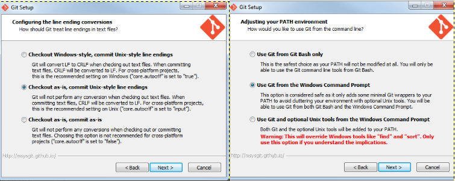
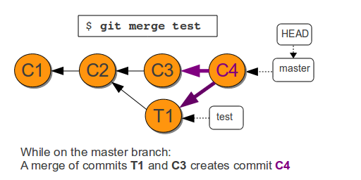

Getting Started With Git - 02/04/2015
Presenter Notes
Installation
- Click the Git.exe in your downloads folder
- Choose the default options. Apart from... 
- Setup configuration using the handout
Presenter Notes
Clearcase vs Git
Presenter Notes
Differences between the two
- Each Git clone is a replica of the central repository
- Git has no checkin command and checkout command is not what it means in Clearcase
- There are no view and no config specs
Presenter Notes
Cloning an Existing Repository
- Use
git clone [url]command to copy an existing Git repository from the server. - This is a one time operation.
Presenter Notes
Exercise - Clone down a repository
- Go to https://gerrit.ericsson.se - Ericsson's Git server
- In the top left click Projects -> List
- Type in
cm-sync-nodeand click on the 2nd project - Copy the git clone command
- In Git bash paste it in - you'll need to click on the border icon
- cd into project
Presenter Notes
Viewing Repository Status
git status
Use this to view the working tree status. This shows files that are in the following states:
- Modified
- Added
- Deleted
- Renamed
- Copied
- Untracked (not yet added to staging)
git status
Presenter Notes
The staging area
- What makes Git unique is its concept of a staging area
- The staging area is a temporary area to store your work before committing it
- It allows you to structure your commits in a way that suits you best
A commit lifecycle

Presenter Notes
Committing your changeset
git commit
Use git commit when you are happy with the changes to your files
git commit
Some useful commit options:
- -a | --all : Bypass the staging area process for files already under version control
- -m=<msg> | --message=<msg> : Specify your commit message
- --amend : Add the current changes in the staging area to the last commit in history
Tip: Commit often. It saves you from deleting work by mistake
Presenter Notes
Viewing the repository history
git log
Use git log to view the commits in a repository
git log
Some useful log options:
- -<number> | -n <number> : Limit the number of commits to list
- --graph : A text based graph
- git log <file>... : Show commits that affected the specified file(s)
Presenter Notes
Exercise - Git Lifecycle
Run git status after each of these steps
- From the project you cloned, open up pom.xml in the editor of your choice
- Edit a few lines
- Add the file to the staging area
- Commit the file
- View your history
Presenter Notes
Viewing the changes to your tracked files
git diff
You will want to view the changes you have made before you commit
- View changes in your working directory
git diff
- View changes in your staging area
git diff --cached
Presenter Notes
Exercise - Viewing changes to your repo
- Make some changes to the file(s) in your repo
- Create a new file
- View the diff for your working directory and staging area
- Add the new file and the changes to your existing file(s) to your staging area
- View the diff of your working directoy and staging area
- Commit your changes
Note: During all of the above steps make lots of use of the git status command. It is very helpful for letting you know what is happening in your repo
Presenter Notes
Ignoring files via .gitignore
- The gitignore file allows you to tell git to ignore certain files and not list them in your status output
- This is useful when you are building artifacts in the working directory that you don't want to be commited
- Examples are:
- compiled files
- binary executables
- third party libraries
Presenter Notes
Reverting changes to the working directory
git checkout
Sometimes you realise that the changes you have made have made the code worse and you want to revert to the last committed version of the files
git checkout will discard all changes you have made to the file. This will not affect files in the staging area
git checkout -- <file>...
Presenter Notes
Reverting changes in the staging area
git reset
Remove the file(s) from the staging area but keep the changes in your working directory
git reset HEAD <file>...
Remove all files from the staging area and discard their changes completely
Danger: There is no coming back from this!
git reset HEAD --hard
Presenter Notes
Branching
git branch
- By default in git the main branch is named master
- Branches are pointers to revisions
- An asterisk is used to see the current branch you're on
Some useful options:
- -v : See the last commit on each branch
- -a : View all branches including remotes
Presenter Notes
Creating a branch
git branch
git branch <branchname> [<start-point>]
- This will create a new branch
- You must supply a branch name
- If you do not supply a start point then the branch will be created at your current revision
Note: Creating a branch does not mean you are now on that branch automatically. It must be checked out
Presenter Notes
Going to a specific revision
git checkout
Use git checkout if you would like to go to a specific revision in your repositories history
You can checkout a branch
git checkout <branchname>
Note: This command does two things
1. Moves the HEAD pointer to the commit the branch last used
2. Reverted the files in the working directory back to the snapshot the branch points to
- Git keeps a special pointer called HEAD that specifies which branch you are currently on.
Presenter Notes
Combining branches
git merge
- Use git merge to combine the code changes from two different branches
git checkout master
git merge test

Presenter Notes
Deleting a branch
git branch
- When the changes on a branch have been merged back in, you will want to delete the branch pointer
git branch -d <branchname>
This will only work if the commits on this branch have been merged to another branch
The more terminal option is to use the -D option. This will delete the branch pointer even if this branch has not been merged
Danger: You will lose any commits on this branch that have not been merged
git branch -D <branchname>
Presenter Notes
git rebase
- git rebase allows you to move your branches on top of each other
- Makes for a tidier history when many branches are live at the same time
- No merge commits left in the history
- Outside the scope of this presentation
Presenter Notes
Exercise - Branching & Merging
- Create a new branch in your repository called branch1
- Check it out and commit some changes
- Checkout master and create another branch called branch2
Note: Changes in your working directory will have changed - Check it out and commit some changes
- Merge the two branches into master
- Delete your branches
Presenter Notes
Git Help
git help
to see a list of all the common commands.
Git Aliases
git config --global alias.<alias> command
For example:
git config --global alias.st status
git config --global alias.plot 'log --oneline --graph --decorate'